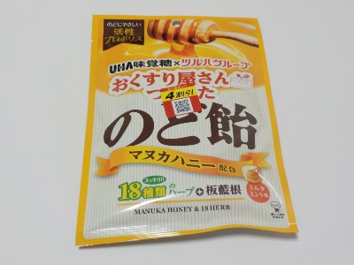
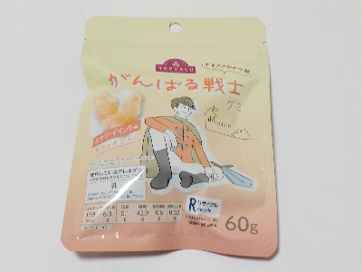
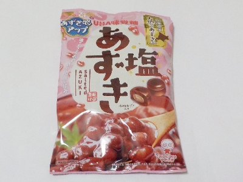

味覚糖×ツルハグループの「おくすり屋さんがつくったのど飴マヌカハニー配合」はちょっとピリピリ。
更新日 : 2026/02/27

プロポリスなのかハーブのせいか分かりませんが、ちょっとピリピリしました。なんとなく成分で体が反応してる感じがしていいですね。普通にミルクミント味も美味しいです。
今回は4割引きで買いましたが、4割引きに遭遇したら買ってます。
大阪市中央区神崎町4番12号
更新日 : 2026/02/27

プロポリスなのかハーブのせいか分かりませんが、ちょっとピリピリしました。なんとなく成分で体が反応してる感じがしていいですね。普通にミルクミント味も美味しいです。
今回は4割引きで買いましたが、4割引きに遭遇したら買ってます。
更新日 : 2026/02/27

明確な理由はわからないんですが、このエナジードリンク味のグミがとっても好きです。
固めの食感と甘いエナジードリンク味が気分転換にピッタリです。カフェインまで入って眠気も飛びそうな感じがします。
でもカフェインのせいかコーヒー飲んだあとにこれを食べるとちょっと重いかんじがするな。気のせいかな？
でも美味しいから食べちゃうんだな。今グミの中で一番これが気に入ってます。
更新日 : 2025/04/14

塩味と小豆味がしっかりあります。甘いんですけど、甘さがそんなに気にならないのでさっぱり感がありました。
飴の中に小豆とパウダーが入っているので小豆感がさらに強くなりますが、飴が溶けてなくなるのも早いです。